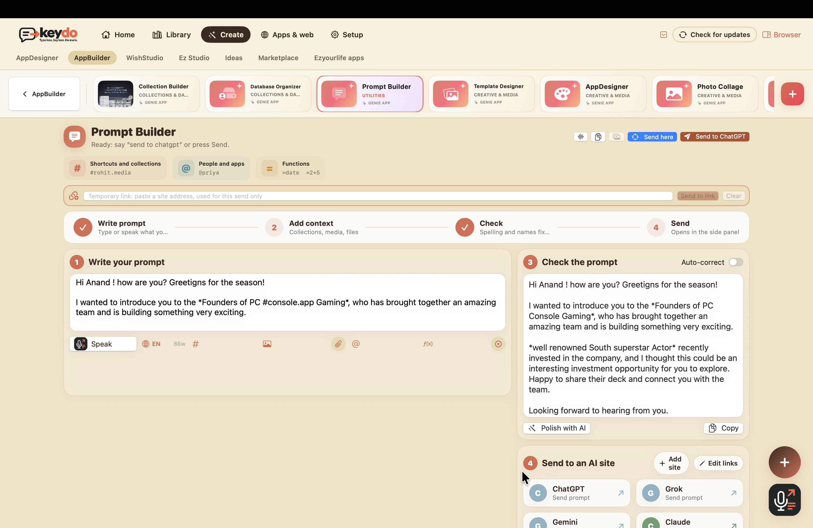

KeyDo platform guide
Home
Your start page. Ask KeyDo what you want to do and it names the app that helps, with an Open button. Also shows published apps and a Find-anything search.
- Ask KeyDo: type a plain sentence such as "make a birthday card" or "rename files"; KeyDo lists the best matches and opens one in a click (4.42).
- Find anything: search shortcuts, collections and apps.
- Prompt Builder sits on Home in a section you can close (4.44). The new Ask KeyDo tab (Create) has chat, a list of what each app does, and the how-to guide with pictures.
Shortcuts and Collections
Short words that turn into long text anywhere you type: press backslash, type the short word, pick the result.
- Own cover for every Ez Tool (4.64): each tool now has its own picture, GIF or video. On the Ez Tools Home page press the picture button on a card; inside a tool press Change cover on its banner. The same cover shows on the card and on that tool's page, and changing one tool never changes the others. Screenshot to be added.
- Ez Tools Home (4.63): Ez Tools now opens on a Home page like WishStudio's, with a header, your cover picture and a grid of tool cards. Press a card to open that tool; the tool row at the top has a Home tab to come back. Right-click a card to give it your own picture. Screenshot to be added.
- Secure vault in My Files (4.62): right-click a file or folder and choose Move to secure vault. It leaves its folder and goes into KeyDo's own hidden vault, so it is no longer where anyone browsing the Mac would see it. Press Protected files and enter your passcode to open the vault; right-click an item and choose Put back to return it to where it came from. Files are not encrypted. Screenshot to be added.
- Font Creator reads more of your letter (4.61): besides thickness, corners, lean and colours it now detects serifs and thick-and-thin strokes, fits the letter width to the letters you typed, and draws every other letter the same way. New Serifs and Thick & thin sliders, and a check strip that shows your letter above KeyDo's drawing of it. Screenshot to be added.
- Font Creator to WishStudio (4.60): press Send to WishStudio at the top of Font Creator. The font is saved if needed, its name is copied, and WishStudio opens. In WishStudio pick any text, open Font and choose the name that starts with KeyDo. Screenshot to be added.
- Quick Look (4.59): the eye button on a Finder file, the Quick Look menu item and the Space key open the normal macOS preview window inside KeyDo. Use the arrow keys to move between files and Escape to close it.
- My Files Finder, hide with passcode (4.58): right-click a file or folder and choose Hide with passcode. It stays where it is but disappears from KeyDo until you press Protected files and enter your passcode, the same 6-digit passcode used for hidden collections. Hidden items show a small lock. Leaving the Finder tab hides them again. Screenshot to be added.
- Ez Tools (4.58): change the cover picture with Change cover at the top, and right-click any tool tab to give it your own picture. The whole page now scrolls to the bottom for every tool, including Font Creator. Screenshot to be added.
- My Files Finder (4.57): big icons with real previews (use the slider to make them smaller or bigger), buttons that appear when you point at a file, and rename right on the name (double-click the name, press Return, or use the pencil). Click selects one file, Shift-click selects a range, Command-click adds or removes one, and dragging a box on the empty space selects everything inside it. Drag any of the selected files to a folder to move them. Screenshot to be added.
- Top menu (4.57): My Files, Collection Builder and Ez Tools now have their own buttons on the top row. Screenshot to be added.
- Ez Tools (4.57): Ez Studio is now Ez Tools. Every tool is its own tab: Image Studio, Image Edit, Resize and Crop, Video Editor, Photo Collage, Logo on Background, Bollywood 80s and Font Creator. Screenshot to be added.
- My Files (4.55): Database Organizer is now called My Files. The new Finder tab lets you browse Desktop, Documents, Downloads, other drives and any folder you add, with back and forward, a path bar, list or icon view, search, sort, drag and drop to copy or move (Option copies), new folder, rename, duplicate, copy, cut, paste, compress, Quick Look, Get info and Move to Trash. Add to My Files library saves a file for tags, notes and search inside documents. Screenshot to be added.
- Top menu (4.55): one row. Click Library, Create, Apps & web or Setup to open a menu with every page and what it does. The page you are on shows next to its group. Screenshot to be added.
- Home (4.55): Your apps and links shows AppDesigner, AppBuilder, WishStudio and Ezyourlife apps and your saved links together, with chips to filter. Screenshot to be added.
- Collections (4.54): all grid tiles are exactly the same size with an even gap; videos and GIFs show a still picture and play only while the pointer is over the tile, so nothing overlaps.
- Collections (4.53): the grid keeps every tile in its own place when you sort or switch the Video, Image or other type tabs, so tiles no longer overlap. The sidebar button at the top left of a collection hides or shows the categories panel (KeyDo remembers your choice). Cleaner header, one row for Favourites and Sort, and even tiles. Screenshot to be added.
- Collections are folders of shortcuts; sort by time, name or category; search categories; favourite from the tile (4.37).
- Live values fill in date, time, city, weather and more (location is asked only when needed, 4.39).
- Voice dictation and "open ..." commands.
Prompt Builder
Write or speak a prompt, add collections, media and files, check it, then send it to ChatGPT, Grok, Claude or Gemini in the side panel.
- New look (4.44): one + Add context button for collections, media, files, people, apps and functions; three starters under "Skip the blank page"; the link row is tucked away. Also on the Home page.
- Tokens: #collection, @person, =date or =2+5.
- Auto-correct and Polish with AI.
- Temporary link for one send.

Database Organizer
Organize files, contacts, links, media and tables in one place.
- Organizer tab: scan folders, search inside documents, filter and tag.
- Recent Files (second tab): files you opened or downloaded and web documents (Google Sheets, Docs, Slides, Word online). Select, rename one or many (prefix, suffix, find and replace, numbering, letter case), tag, and tick off the daily organizing task (4.42).
- Tags: the latest 10 show, More opens the rest, Manage tags renames or deletes a tag everywhere (4.42).
- Collections can be renamed (4.39).
- 50 records per page with Next (4.37).
- File Renamer tab: bulk rename database files.
- Document Viewer: PDF and Word with notes, highlights, tags and voice.
AppBuilder
Make your own mini apps and use the built-in ones.
- Prompt Builder (4.50): the writing box and the checked box are the same size; "send to ChatGPT" said to the voice bubble sends from the page you are on.
- Prompt Builder voice (4.48): no double typing; repeated words and sentences are removed live in Check the prompt; spoken "send to ChatGPT" waits until you finish speaking.
- Research capture (4.52, updated 4.56): the button in the browser tools row saves pictures you copy in the browser for 10 minutes, then turns off. Pictures only. Since 4.56 the picture is a real downloaded file in Pictures > KeyDo Research (also listed in My Files, collection Research), even when the browser copies only the picture address. Screenshot to be added.
- Home page Prompt Builder clears itself when closed or left (4.52).
- Browser in its own window (4.47): the window button in the Browser top bar or Shift Command N opens a browser with its own tabs and split view. Screenshot to be added.
- One voice at a time (4.47): starting any mic stops the others, so the prompt mic and the voice bubble no longer clash.
- Prompt Builder (4.46): each section opens and closes with its arrow; the small Ask KeyDo tab in the top left corner opens the chat; sending works with Auto-correct off. Screenshot to be added.
- Font Creator (4.51): Crop to pick the letter, Add these letters one crop at a time, and Create with AI to draw the remaining letters in your style. Screenshot to be added.
- Font Creator (4.49): type the letters in your picture (for example HES) and they are copied exactly; the rest of A to Z, a to z and 0 to 9 follows the same look. 20 ready fonts. Screenshot to be added.
- Font Creator (4.45): upload a picture of one letter and KeyDo builds A to Z and 0 to 9 in that look (thickness, corners, lean and colours). Ten ready fonts are included: Summit Block, Marquee Neon, Rangoli Dots, Stencil Army, Royal Outline, Retro Shadow, Bollywood Italic, Candy Round, Deco Line and Pixel Grid. Saved fonts appear as "KeyDo · name" in every Font list, including Wish Studio text layers. Word and web page output use a normal font instead. Screenshot to be added.
- Hide apps / Show apps closes the row of app tabs to give the app more room (4.44).
- Built-in: Collection Builder, Database Organizer, Prompt Builder, Template Designer, AppDesigner.
- Photo Collage: up to four views of one thing on one sheet (4.39).
- Logo on Background: transparent logo PNG placed on any picture (4.39).
- Bollywood 80s: a warm, grainy retro film look (4.39).
- Each picture made costs 10 credits; the preview is free.
- Common library with search and categories in every picture slot, plus Paste for a copied picture (4.40, 4.42).
- Send to app as template: send a finished picture to another app, or to any Wish Studio app (4.40, 4.41).
WishStudio
Make birthday, anniversary, Diwali and other wish cards. Type a command such as hbd-Rahul in the popup.
- Simple view: pick artwork, add text layers, move, resize and rotate them (4.38 adds the angle control), choose a font, activate with a command word.
- Advanced tools open on the same design you made in the simple view (4.38).
- Library with search and categories, and Paste picture (4.41, 4.42).
- Filter menu (4.43): the same Prism filters as the Video Editor, applied to the app's artwork with a strength slider; templates are redrawn at once.
- Create from a prompt, a blank design or a duplicate; skip step 1 to use the default designs.
- Gifting: a fixed 34x24x9 cm box with finishes, jars, contents and lid flowers.
Video Editor and Prism Studio
Cut, join clips of different sizes, reorder them, and apply 10 Prism filters to videos up to 100 MB.
- Cut, Join clips and Filters tabs.
- Watermark tab (4.43): keep a logo on the whole video with a see-through level, size and corner; add pictures or animated GIFs for chosen seconds. They are drawn into the video on export with a short fade, so they look like part of the film.
Browser
A web browser inside KeyDo with tabs and a side panel for AI sites. Google and Office documents you open are added to Recent Files.
- Opening the browser in its own window is planned.
Credits, AI keys and settings
Credits pay for designs, AI pictures and video, Wish cards and the photo apps. AI keys are pasted once in the AI keys page. Account and settings hold sync and backup.
- Cloud sync uses email-and-password accounts.
Subscriptions — Free, Pro and Teams
KeyDo has three tiers. Your current plan is shown at the top of Home next to your name.
- Free: unlimited text shortcuts, live values, the calculator, up to 3 collections and 50 AI credits per month. No credit card needed.
- Pro — $4.99/mo or $39/yr (₹399/mo or ₹3,199/yr): everything in Free plus cloud sync, unlimited collections, media shortcuts, full WishStudio, AppBuilder, Ez Tools, all AI features, and publishing to the KeyDo Store.
- Teams — $7.99/seat/mo (₹649/seat/mo): everything in Pro plus shared collections, an admin dashboard, template locking, usage analytics, and an onboarding kit for your team.
To upgrade, press your plan badge on Home or go to Settings > Subscription. Payment is handled through the KeyDo website (Stripe Checkout). The app checks your subscription when you sign in and refreshes it every hour.
Pro features show a lock badge when you are on the Free plan. Pressing the badge opens the upgrade sheet.
7-Day KeyDo Challenge
A guided seven-day onboarding with one practical task per day. The streak pill on Home shows your progress.
- Day 1 — Save your signature: create
/sigand never type your name and title again. - Day 2 — Build a reply template: pick an email you send often and save it as a shortcut.
- Day 3 — Use a live value: type
/todayor/nowand see the date fill in automatically. - Day 4 — Run the calculator: type a maths expression in any app to get the answer.
- Day 5 — Send a wish card: type
hbd-followed by a name to send a birthday card from any text field. - Day 6 — Share a collection: share your shortcuts with a team member or export a pack for others to install.
- Day 7 — Build your first app: open AppBuilder and make your own mini app with a custom prefix.
Completing all seven days earns the KeyDo Pro badge — a shareable 1080×1080 image for LinkedIn, Twitter and WhatsApp. Press Copy badge card or Copy share text in the badge sheet.
KeyDo Store — Template Marketplace
Browse and install shortcut packs made by the KeyDo team and the community. Each pack installs in one click and its shortcuts land in your library automatically.
- Browse by category: Sales, Support, HR, Developer, Finance, Meetings, Writing, and more.
- Search by keyword or use case.
- Staff-picked packs are marked with a checkmark. Free-tier users can browse and install free packs; Pro users unlock everything.
- Publish your own pack (Pro): press Publish a pack in the Store. Add a title, description, category, and your shortcuts, then submit for review. Approved packs earn 70% of paid downloads (30/70 split with KeyDo).
- Install counts, ratings and categories are live from the server and update on each launch.
KeyDo Wall
A community board where users share how KeyDo fits into their day. The KeyDo team also posts official tips and responds directly.
- Filter posts by type: All, From KeyDo, Tips, Showcases, Experiences.
- Like any post. Posts from the KeyDo team carry a blue badge.
- Share your experience: press the button at the top right of the Wall, write what helps you most, and optionally include the shortcut key. Posts go through a quick approval step to keep the wall clean.
- Featured posts appear first and have a subtle highlight.
International Starter Pack
30 ready-made shortcuts installed automatically alongside the Indian starter packs. All use neutral global English with no region-specific tax or currency.
- Email replies:
/thanks/follow/sorry/ooo(out-of-office). - Signatures:
/sig— multi-line email signature template. - Sales:
/intro/demo/proposal/disc(discount offer). - Support:
/greet/resolve/escalate/refund. - HR:
/offer/interview/reject/leave. - Developer:
/todo/fixme/prlink/standupd(daily standup). - Finance:
/invoice/quote. - Meetings:
/agenda/minutes. - Live dates:
/today/now/+30/+7.
All 30 shortcuts land in the International Starter Pack collection on first launch. Edit any of them to fit your name, company or style.